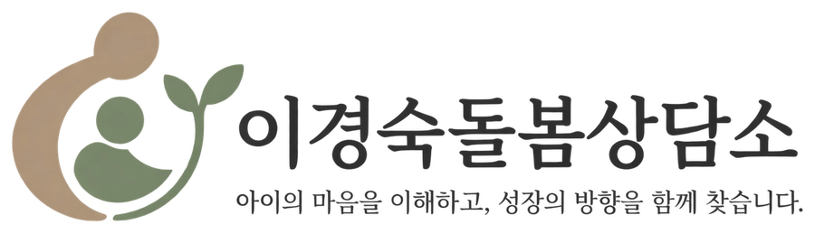
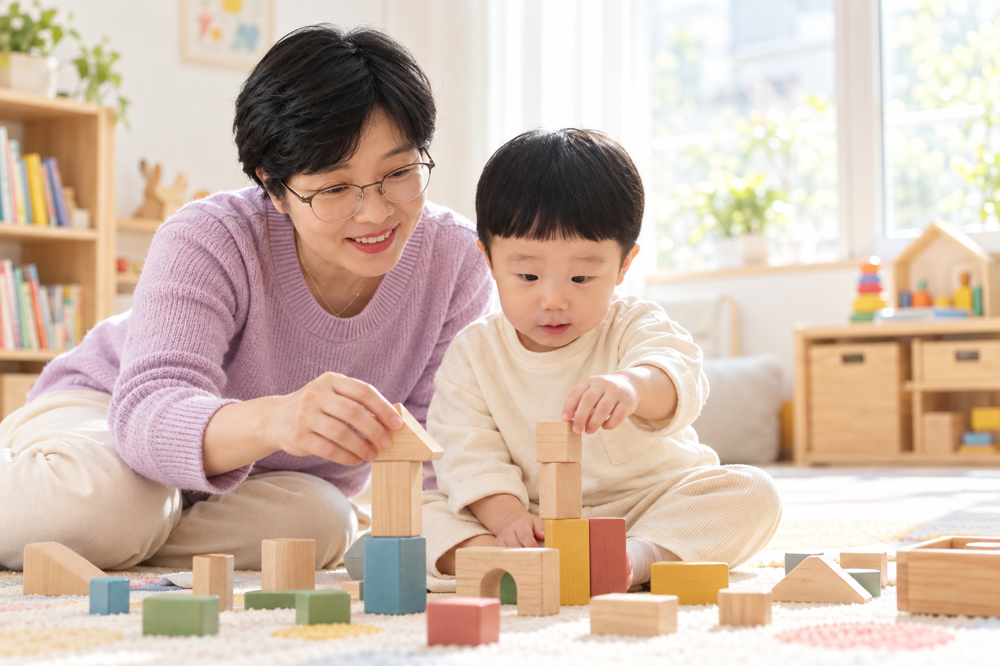
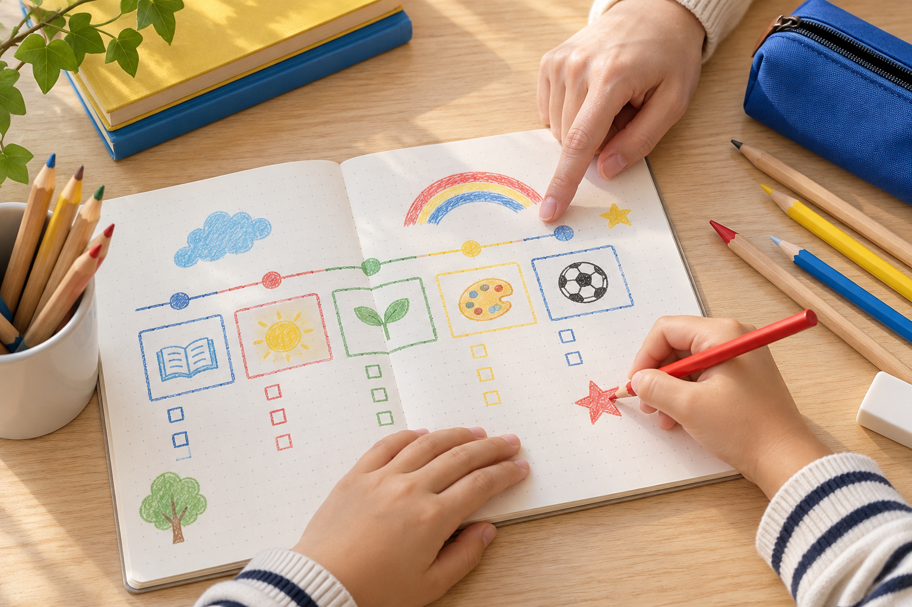
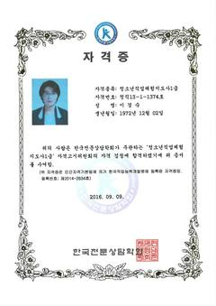
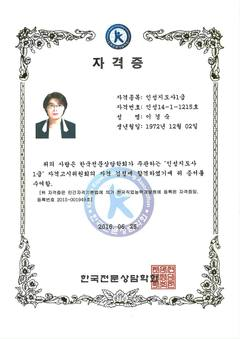
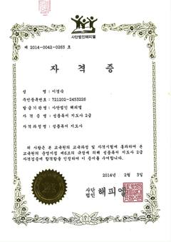
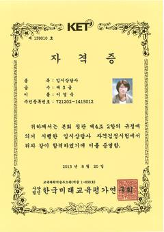
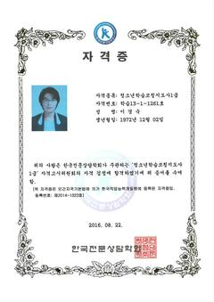
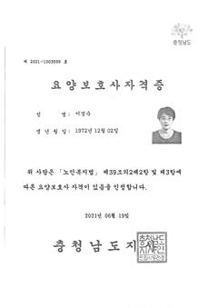
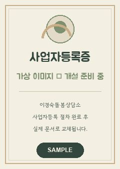

마음을 먼저 봅니다
“왜 말을 듣지 않을까?”보다 “왜 이런 행동을 했을까?”를 먼저 생각합니다.


CARE PHILOSOPHY
돌봄은 아이와 시간을 보내는 것만으로 충분하지 않습니다.
지금 이 아이가 무엇을 느끼는지
왜 이런 행동을 하는지
앞으로 무엇을 배워야 하는지
이해만 하는 것도, 가르치기만 하는 것도 아닌 이해하면서 바른 방향을 알려주는 것. 그것이 이경숙 상담사가 생각하는 돌봄입니다.
“왜 말을 듣지 않을까?”보다 “왜 이런 행동을 했을까?”를 먼저 생각합니다.
마음을 이해한 뒤 생활습관, 관계, 공부와 책임감을 아이의 눈높이에서 알려줍니다.
아이에게 필요한 것과 부모가 해줄 수 있는 것을 나누고, 오늘의 작은 행동부터 정합니다.
WHAT MAKES CARE DEEP
아이를 많이 돌본 경험과 전문 지식도 중요합니다. 그보다 먼저 필요한 것은 사람을 이해하는 힘이라고 생각합니다.
다양한 사람을 만나고 돌보며 상대의 입장에서 생각하고 필요한 말을 건네는 법을 배워왔습니다. 그 경험을 아이들의 성장에도 이어갑니다.
이해하되 방임하지 않고,
가르치되 아이의 마음을 놓치지 않습니다.
COUNSELING PROGRAM
반복되는 떼쓰기, 잠·식사·놀이 습관처럼 일상에서 부딪히는 장면을 함께 살펴봅니다.

공부를 미루는 이유와 부모·아이의 대화가 부딪히는 지점을 찾고, 실천 가능한 공부 습관을 정합니다.
책을 읽는 데서 끝내지 않고, 마음에 남은 생각을 자기 말과 글로 표현하도록 돕습니다.
중·고등학생의 학습·진로·입시 상담은 외부 전문가 연계를 검토 중이며, 협의 완료 후 별도로 안내합니다.
HOW TO MEET
상담은 아이를 단정하거나 부모를 평가하는 시간이 아닙니다. 지금의 상황을 함께 이해하고, 가정에서 해볼 수 있는 행동을 정하는 교육상담입니다.
아이의 나이, 반복되는 행동, 부모님이 가장 힘든 장면을 차분히 듣습니다.
아이의 마음과 생활 환경, 관계와 배움의 흐름을 함께 살펴봅니다.
아이에게 필요한 것과 부모님이 해줄 수 있는 작은 행동부터 정리합니다.
COUNSELOR
다양한 사람을 돌보고 가르치며, 상대의 입장에서 생각하고 필요한 말을 건네는 법을 배워왔습니다.
노인 돌봄의 현장, 독서코칭과 학습상담, 다문화상담의 경험은 한 사람의 말과 행동을 쉽게 판단하지 않는 태도로 이어졌습니다. 아이의 마음을 먼저 이해하고, 잘 자라기 위해 필요한 방향은 부모님과 함께 분명하게 찾겠습니다.
CREDENTIALS & LEARNING
상담과 돌봄의 바탕이 된 자격과 배움의 이력을 작은 문서 이미지로 정리했습니다.







WITH PARENTS
지금 아이가 어려워하는 마음과 성장에 필요한 배움을 구분합니다.
부모의 상황과 아이의 성향에 맞는 말과 행동을 함께 정리합니다.
거창한 계획보다 가정에서 반복할 수 있는 작은 실천을 남깁니다.
CONTACT
지금 가장 마음에 걸리는 부분만 간단하게 남겨주세요.
확인 후 제가 직접 연락드리겠습니다.